pacman::p_load(readxl, tidyverse, tsibble, feasts, fable, seasonal,zoo, plotly)Take-Home Exercise 02
1. Introduction
Singapore has long been a global case study in open economies. Despite its small size, Singapore has demonstrated resilience to external shocks through strategic economic policies. Businesses worldwide leverage insights from the Department of Statistics Singapore to make informed decisions on imports and exports, leading to new investment opportunities.
Analysing Singapore’s trade patterns provides insights into how the country maintains its competitive advantage in global commerce. Additionally, historical trade data helps identify growth trends and seasonal patterns over time.
2. Getting Started
2.1 Loading the relevant libraries
The following R packages will be used:
readxl: Reads Excel files in Rtidyverse: Used for data manipulation, visualisation and analysistsibble: Provides tools for handling and manipulating time series datafeasts: Provides functions for time series analysis, such as seasonal decompositionfable: Framework for forecasting time series data in Rseasonal: Performs seasonal adjustments and time series decomposition for economic datazoo: Provides functions for working with irregular time series and ordered observations in Rplotly: For plotting interactive statistical graphs
2.2 Data Source
In this study, we will review the visualisations on the website that display statistics on Singapore’s International Trade. Click here to access the page.
The “Merchandise Trade By Commodity Section/Division” and “Merchandise Trade by Region/Market” datasets will be used.
The dataset is retrieved from the Department of Statistics Singapore.
4. Make-Over of Existing Data Visualisation
In this section, the “Merchandise Trade By Commodity Section, (At Current Prices), Monthly” dataset will be used.
The dataset is retrieved from the Department of Statistics Singapore.
We import the dataset using read_excel() of the readxl pacakage.
The first 10 rows and 79th row onwards will be skipped as these are just background information about the dataset.
merchandise_trade <- read_excel("data/outputFile.xlsx",
sheet="T1", skip = 10, n_max = 68,
col_names = TRUE)Lets view the first 28 rows of the dataset.
head(merchandise_trade, 28)# A tibble: 28 × 734
`Data Series` `2025 Jan` `2024 Dec` `2024 Nov` `2024 Oct` `2024 Sep`
<chr> <dbl> <dbl> <dbl> <dbl> <dbl>
1 Total Merchandise Tra… 114153980. 116278793. 110132324. 107525960. 103512460.
2 Oil 19490290. 18488974. 18061885. 17510050. 15686654.
3 Petroleum 16418934. 15564654. 14910686. 14804334. 12611958.
4 Oil Bunkers 3071356. 2924319. 3151200. 2705716. 3074695.
5 Non-Oil 94663690. 97789819. 92070439. 90015910. 87825806.
6 Food & Live Animals 2460911. 2704579. 2237326. 2344745. 2235005.
7 Beverages & Tobacco 663688 851520. 771873. 808858. 808112.
8 Crude Materials (Excl… 592338. 598748. 612852 642347. 559562.
9 Animal & Vegetable Oi… 388184 176576. 134924. 175904. 250542.
10 Chemicals & Chemical … 8608980. 8845756. 8830083. 8762947. 9592894.
# ℹ 18 more rows
# ℹ 728 more variables: `2024 Aug` <dbl>, `2024 Jul` <dbl>, `2024 Jun` <dbl>,
# `2024 May` <dbl>, `2024 Apr` <dbl>, `2024 Mar` <dbl>, `2024 Feb` <dbl>,
# `2024 Jan` <dbl>, `2023 Dec` <dbl>, `2023 Nov` <dbl>, `2023 Oct` <dbl>,
# `2023 Sep` <dbl>, `2023 Aug` <dbl>, `2023 Jul` <dbl>, `2023 Jun` <dbl>,
# `2023 May` <dbl>, `2023 Apr` <dbl>, `2023 Mar` <dbl>, `2023 Feb` <dbl>,
# `2023 Jan` <dbl>, `2022 Dec` <dbl>, `2022 Nov` <dbl>, `2022 Oct` <dbl>, …From the preview above, here are the key observations:
Rows 6 to 14 are non-oil merchandise imports
Rows 19 to 27 are non-oil merchandise exports
Rows 33 to 41 are non-oil domestic exports
To help with our analysis, we will save these 3 sets of data separately, and taking only the 2024 datasets.
non_oil_merchandise_imports <- merchandise_trade[19:27, c(1,3:14)]
non_oil_merchandise_exports <- merchandise_trade[33:41, c(1,3:14)]
non_oil_domestic_exports <- merchandise_trade[47:55, c(1,3:14)]4.1 Non-oil Merchandise Trade by Major Commodity Sections, 2024
We start by creating a new column with the sum of 2024 non-oil exports and imports respectively.
non_oil_merchandise_imports$`2024_sum_imports` <- rowSums(non_oil_merchandise_imports[, 2:13], na.rm = TRUE)
non_oil_merchandise_imports$`2024_sum_imports`[1] 13864241 4879537 3038816 3098804 42766218 27735050 322073528
[8] 47710175 28569546non_oil_merchandise_exports$`2024_sum_exports` <- rowSums(non_oil_merchandise_exports[, 2:13], na.rm = TRUE)
non_oil_merchandise_exports$`2024_sum_exports`[1] 13785435.3 4600202.3 4149310.8 271569.7 69516959.2 17218137.0
[7] 363221995.8 57567092.2 28155312.7Next, we join both tables, taking only the “2024_sum” columns.
non_oil_merchandise <- full_join(non_oil_merchandise_exports, non_oil_merchandise_imports, by = "Data Series")
non_oil_merchandise <- non_oil_merchandise[, c("Data Series", "2024_sum_exports", "2024_sum_imports")]
non_oil_merchandise# A tibble: 9 × 3
`Data Series` `2024_sum_exports` `2024_sum_imports`
<chr> <dbl> <dbl>
1 Food & Live Animals 13785435. 13864241.
2 Beverages & Tobacco 4600202. 4879537.
3 Crude Materials (Excl Fuels) 4149311. 3038816.
4 Animal & Vegetable Oils Fats & Waxes 271570. 3098804.
5 Chemicals & Chemical Products 69516959. 42766218.
6 Manufactured Goods 17218137 27735050.
7 Machinery & Transport Equipment 363221996. 322073528.
8 Miscellaneous Manufactured Articles 57567092. 47710175
9 Miscellaneous (Excluding Oil Bunkers) 28155313. 28569546.Before plotting the bar chart, let’s prepare the data further. We need to rearrange the data according the to Exports amount, then add a ranking to each of the Exports and Imports column so that the ranks can appear in the plot later on.
non_oil_merchandise <- non_oil_merchandise %>%
arrange(`2024_sum_exports`)
non_oil_merchandise_pivot <- non_oil_merchandise %>%
pivot_longer(cols = c(`2024_sum_exports`, `2024_sum_imports`), names_to = "Trade Type", values_to = "2024 Sum")
non_oil_merchandise_pivot <- non_oil_merchandise_pivot %>%
group_by(`Trade Type`) %>%
mutate(Rank = rank(-`2024 Sum`, ties.method = "first"))
non_oil_merchandise_pivot$`Data Series` <- factor(non_oil_merchandise_pivot$`Data Series`, levels = non_oil_merchandise$`Data Series`)We need to calculate the sum of exports and imports respectively for the labels in the chart.
non_oil_merc_exp <- sum(non_oil_merchandise$`2024_sum_exports`)
non_oil_merc_imp <- sum(non_oil_merchandise$`2024_sum_imports`)
non_oil_merchandise_pivot <- non_oil_merchandise_pivot %>%
mutate(Percentage = case_when(
`Trade Type` == "2024_sum_exports" ~ `2024 Sum` / non_oil_merc_exp * 100,
`Trade Type` == "2024_sum_imports" ~ `2024 Sum` / non_oil_merc_imp * 100
))Next, we can plot the horizontal bar chart with the ranking labels.
ggplot(non_oil_merchandise_pivot, aes(y = `Data Series`, x = `2024 Sum`, fill = `Trade Type`)) +
geom_bar(stat = "identity", position = "dodge") +
labs(title = "NON-OIL MERCHANDISE TRADE BY MAJOR COMMODITY SECTIONS, 2024",
x = "Trade Type") +
theme_minimal() +
scale_fill_manual(
values = c("2024_sum_imports" = "#1f78b4", "2024_sum_exports" = "#FFA500"),
labels = c("2024_sum_exports" = "Export", "2024_sum_imports" = "Import")
) +
theme(
plot.title = element_text(hjust = 0.5, face = "bold", size = 16),
axis.text.x = element_text(angle = 45, hjust = 1),
legend.position = "bottom"
) +
geom_text(data = filter(non_oil_merchandise_pivot, Rank %in% c(1, 2, 3)),
aes(label = Rank, color = "Trade Type"),
position = position_dodge(width = 0.7),
hjust = -0.2, vjust = 0.5, color = "black", size = 5) +
geom_text(data = non_oil_merchandise_pivot,
aes(label = scales::comma(`2024 Sum`)),
position = position_dodge(width = 0.7),
hjust = -0.3, vjust = 0.5, size = 3, color = "black") +
geom_text(data = non_oil_merchandise_pivot,
aes(label = paste(round(Percentage, 1), "%")),
position = position_dodge(width = 0.7),
hjust = 1.5, vjust = 0.5, size = 3, color = "black")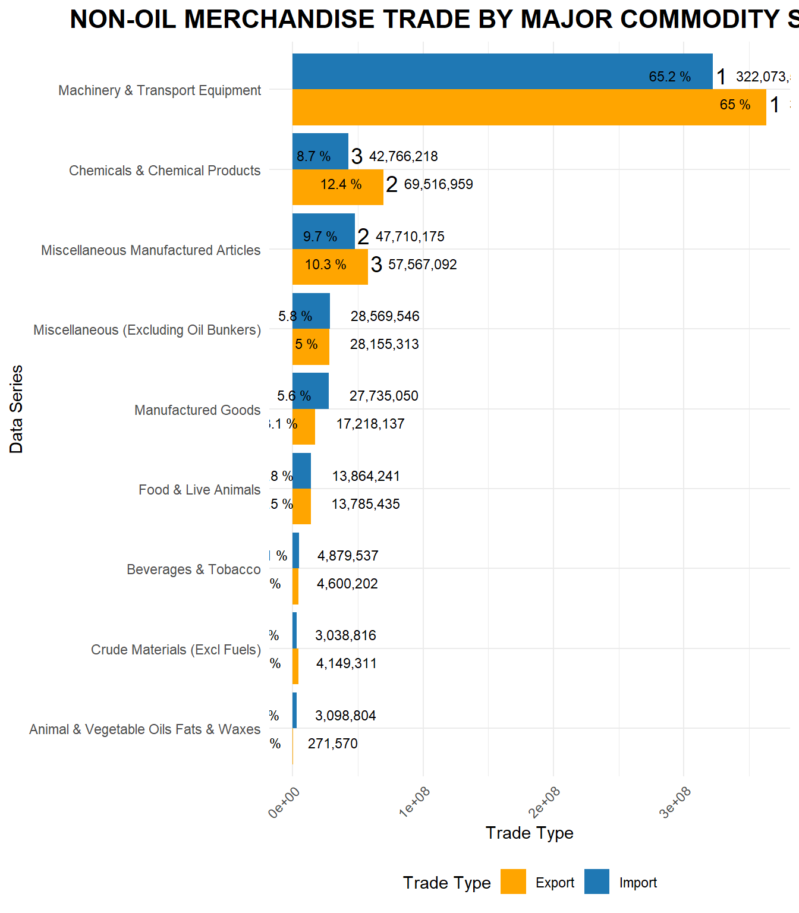
non_oil_merchandise_pivot# A tibble: 18 × 5
# Groups: Trade Type [2]
`Data Series` `Trade Type` `2024 Sum` Rank Percentage
<fct> <chr> <dbl> <int> <dbl>
1 Animal & Vegetable Oils Fats & Waxes 2024_sum_ex… 271570. 9 0.0486
2 Animal & Vegetable Oils Fats & Waxes 2024_sum_im… 3098804. 8 0.628
3 Crude Materials (Excl Fuels) 2024_sum_ex… 4149311. 8 0.743
4 Crude Materials (Excl Fuels) 2024_sum_im… 3038816. 9 0.615
5 Beverages & Tobacco 2024_sum_ex… 4600202. 7 0.824
6 Beverages & Tobacco 2024_sum_im… 4879537. 7 0.988
7 Food & Live Animals 2024_sum_ex… 13785435. 6 2.47
8 Food & Live Animals 2024_sum_im… 13864241. 6 2.81
9 Manufactured Goods 2024_sum_ex… 17218137 5 3.08
10 Manufactured Goods 2024_sum_im… 27735050. 5 5.62
11 Miscellaneous (Excluding Oil Bunker… 2024_sum_ex… 28155313. 4 5.04
12 Miscellaneous (Excluding Oil Bunker… 2024_sum_im… 28569546. 4 5.79
13 Miscellaneous Manufactured Articles 2024_sum_ex… 57567092. 3 10.3
14 Miscellaneous Manufactured Articles 2024_sum_im… 47710175 2 9.66
15 Chemicals & Chemical Products 2024_sum_ex… 69516959. 2 12.4
16 Chemicals & Chemical Products 2024_sum_im… 42766218. 3 8.66
17 Machinery & Transport Equipment 2024_sum_ex… 363221996. 1 65.0
18 Machinery & Transport Equipment 2024_sum_im… 322073528. 1 65.2 4.2 Non-oil Domestic Exports by Major Commodity Sections, 2024
We start by creating a new column with the sum of 2024 non-oil domestic exports.
non_oil_domestic_exports$`2024_sum` <- rowSums(non_oil_domestic_exports[, 2:13], na.rm = TRUE)
non_oil_domestic_exports$`2024_sum`[1] 11528730.6 183273.5 2673165.6 174915.4 44438593.1 5004532.5 70379106.3
[8] 28644988.5 10573408.9Next, we compute the sum of 2024 domestic exports, which will form the denominator of our percentage.
Then, we plot the donut chart with ggplot().
total_domestic_exports <- sum(non_oil_domestic_exports$`2024_sum`)
non_oil_domestic_exports <- non_oil_domestic_exports %>%
mutate(
percentage = (`2024_sum` / total_domestic_exports) * 100,
label = paste(`Data Series`, "\n", `2024_sum`, " (", round(percentage, 1), "%)")
)
ggplot(non_oil_domestic_exports, aes(x = 2, y = `2024_sum`, fill = `Data Series`)) +
geom_bar(stat = "identity", width = 1, color = "white") +
coord_polar("y", start = 0) +
theme_void() +
theme(legend.position = "right") +
geom_text(aes(x = 2.5, label = label), position = position_stack(vjust = 0.5), size = 2) +
ggtitle("NON-OIL DOMESTIC EXPORTS BY MAJOR COMMODITY SECTIONS, 2024") +
theme(plot.title = element_text(hjust = 0.5, face = "bold", size = 20)) +
xlim(0.5, 2.5) 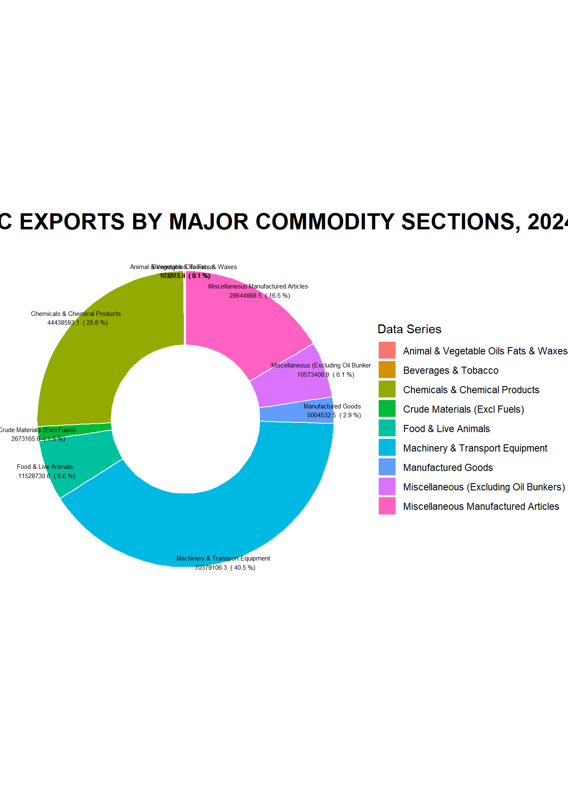
4.3 Major Trading Partners for Trade in Services, 2023
For this section, we will load the dataset from “Merchandise Trade By Region and Selected Market (Imports), Monthly” and “Merchandise Trade By Region and Selected Market (Exports), Monthly”.
The dataset is also retrieved from the Department of Statistics Singapore and we import the dataset using read_excel() of the readxl pacakage.
The first 10 rows and 160th row onwards will be skipped as these are just background information about the dataset.
imports_services <- read_excel("data/outputFile_region_market.xlsx",
sheet="T1", skip = 10, n_max = 160,
col_names = TRUE)
exports_services <- read_excel("data/outputFile_region_market.xlsx",
sheet="T2", skip = 10, n_max = 160,
col_names = TRUE)We are only interested in the data from 2019 to 2023, hence we filter the data for each of the imports_services and exports_services dataset.
imports_services_trades <- imports_services[, c(1,15:75)]
imports_services_trades <- imports_services_trades %>%
mutate(
`2023_sum_imports` = rowSums(select(., 2:13), na.rm = TRUE),
`2022_sum_imports` = rowSums(select(., 14:25), na.rm = TRUE),
`2021_sum_imports` = rowSums(select(., 26:37), na.rm = TRUE),
`2020_sum_imports` = rowSums(select(., 38:49), na.rm = TRUE),
`2019_sum_imports` = rowSums(select(., 50:61), na.rm = TRUE)
) %>%
select(`Data Series`, `2023_sum_imports`, `2022_sum_imports`, `2021_sum_imports`, `2020_sum_imports`, `2019_sum_imports`)
exports_services_trades <- exports_services[, c(1,15:75)]
exports_services_trades <- exports_services_trades %>%
mutate(
`2023_sum_exports` = rowSums(select(., 2:13), na.rm = TRUE),
`2022_sum_exports` = rowSums(select(., 14:25), na.rm = TRUE),
`2021_sum_exports` = rowSums(select(., 26:37), na.rm = TRUE),
`2020_sum_exports` = rowSums(select(., 38:49), na.rm = TRUE),
`2019_sum_exports` = rowSums(select(., 50:61), na.rm = TRUE)
) %>%
select(`Data Series`, `2023_sum_exports`, `2022_sum_exports`, `2021_sum_exports`, `2020_sum_exports`, `2019_sum_exports`)We group the dataset by EU-27, ASEAN and other countries listed on the original chart.
EU27 <- c("Austria", "Belgium", "Bulgaria", "Croatia", "Cyprus", "Czech Rep", "Denmark", "Estonia", "Finland", "France", "Germany", "Greece", "Hungary", "Ireland", "Italy", "Latvia", "Lithuania", "Luxembourg", "Malta", "Netherlands", "Poland", "Portugal", "Romania", "Slovakia", "Slovenia", "Spain", "Sweden")
ASEAN <- c(
"Brunei", "Cambodia", "Indonesia", "Laos", "Malaysia", "Myanmar",
"Philippines", "Singapore", "Thailand", "Viet Nam"
)
other_countries <- c("United States", "China", "Japan", "Hong Kong", "Australia", "United Kingdom", "Switzerland", "India")For each of the import and export services dataset, we group the data by the required regions, then pivot to a long form and retrieve the corresponding years.
imports_services_grouped <- imports_services_trades %>%
group_by(Partner = case_when(
`Data Series` %in% EU27 ~ "EU-27",
`Data Series` %in% ASEAN ~ "ASEAN",
`Data Series` %in% other_countries ~ `Data Series`,
TRUE ~ as.character(NA))) %>%
filter(!is.na(Partner)) %>%
summarise(`2023_sum_imports` = sum(`2023_sum_imports`, na.rm = TRUE),
`2022_sum_imports` = sum(`2022_sum_imports`, na.rm = TRUE),
`2021_sum_imports` = sum(`2021_sum_imports`, na.rm = TRUE),
`2020_sum_imports` = sum(`2020_sum_imports`, na.rm = TRUE),
`2019_sum_imports` = sum(`2019_sum_imports`, na.rm = TRUE))
imports_services_grouped# A tibble: 10 × 6
Partner `2023_sum_imports` `2022_sum_imports` `2021_sum_imports`
<chr> <dbl> <dbl> <dbl>
1 ASEAN 119034. 147057. 124624.
2 Australia 9262. 11787. 9720.
3 China 78953. 86834. 73314.
4 EU-27 58730. 59040 55864.
5 Hong Kong 2965. 4149. 4361.
6 India 9431. 11664 9884.
7 Japan 28464. 36831. 29271.
8 Switzerland 11171. 15454 11040.
9 United Kingdom 11334. 10912. 9211.
10 United States 69804. 70967. 54349.
# ℹ 2 more variables: `2020_sum_imports` <dbl>, `2019_sum_imports` <dbl>imports_services_pivot <- imports_services_grouped %>%
pivot_longer(cols = c(`2023_sum_imports`, `2022_sum_imports`, `2021_sum_imports`, `2020_sum_imports`, `2019_sum_imports`),
names_to = "Year", values_to = "Imports")
imports_services_pivot <- imports_services_pivot %>%
mutate(Year = str_split_fixed(Year, "_", 2)[, 1])
imports_services_pivot# A tibble: 50 × 3
Partner Year Imports
<chr> <chr> <dbl>
1 ASEAN 2023 119034.
2 ASEAN 2022 147057.
3 ASEAN 2021 124624.
4 ASEAN 2020 110221.
5 ASEAN 2019 106960.
6 Australia 2023 9262.
7 Australia 2022 11787.
8 Australia 2021 9720.
9 Australia 2020 6511.
10 Australia 2019 8536.
# ℹ 40 more rowsexports_services_grouped <- exports_services_trades %>%
group_by(Partner = case_when(
`Data Series` %in% EU27 ~ "EU-27",
`Data Series` %in% ASEAN ~ "ASEAN",
`Data Series` %in% other_countries ~ `Data Series`,
TRUE ~ as.character(NA))) %>%
filter(!is.na(Partner)) %>%
summarise(`2023_sum_exports` = sum(`2023_sum_exports`, na.rm = TRUE),
`2022_sum_exports` = sum(`2022_sum_exports`, na.rm = TRUE),
`2021_sum_exports` = sum(`2021_sum_exports`, na.rm = TRUE),
`2020_sum_exports` = sum(`2020_sum_exports`, na.rm = TRUE),
`2019_sum_exports` = sum(`2019_sum_exports`, na.rm = TRUE))
exports_services_grouped# A tibble: 10 × 6
Partner `2023_sum_exports` `2022_sum_exports` `2021_sum_exports`
<chr> <dbl> <dbl> <dbl>
1 ASEAN 75235. 93499. 71914.
2 Australia 12713. 15349. 10904.
3 China 32794. 33979. 40025.
4 EU-27 25030. 28662. 23429.
5 Hong Kong 14507. 16910. 17338.
6 India 7631. 8478. 7911.
7 Japan 9917. 12030. 10120.
8 Switzerland 3801. 2900. 2949.
9 United Kingdom 1818. 2037. 2644.
10 United States 33364. 33105. 27484.
# ℹ 2 more variables: `2020_sum_exports` <dbl>, `2019_sum_exports` <dbl>exports_services_pivot <- exports_services_grouped %>%
pivot_longer(cols = c(`2023_sum_exports`, `2022_sum_exports`, `2021_sum_exports`, `2020_sum_exports`, `2019_sum_exports`),
names_to = "Year", values_to = "Exports")
exports_services_pivot <- exports_services_pivot %>%
mutate(Year = str_split_fixed(Year, "_", 2)[, 1])
exports_services_pivot# A tibble: 50 × 3
Partner Year Exports
<chr> <chr> <dbl>
1 ASEAN 2023 75235.
2 ASEAN 2022 93499.
3 ASEAN 2021 71914.
4 ASEAN 2020 55400
5 ASEAN 2019 71705.
6 Australia 2023 12713.
7 Australia 2022 15349.
8 Australia 2021 10904.
9 Australia 2020 5882.
10 Australia 2019 8622.
# ℹ 40 more rowsNext, we combine both datasets into a single dataset using full_join(). We also create a column for “Total Trade”, by taking the sum of exports and imports each year for each region.
major_trading_partners <- full_join(exports_services_pivot,
imports_services_pivot,
by = c("Partner", "Year"))major_trading_partners <- major_trading_partners %>%
mutate(`Total Trade` = `Exports` + `Imports`)
major_trading_partners# A tibble: 50 × 5
Partner Year Exports Imports `Total Trade`
<chr> <chr> <dbl> <dbl> <dbl>
1 ASEAN 2023 75235. 119034. 194270.
2 ASEAN 2022 93499. 147057. 240556.
3 ASEAN 2021 71914. 124624. 196538.
4 ASEAN 2020 55400 110221. 165621.
5 ASEAN 2019 71705. 106960. 178666.
6 Australia 2023 12713. 9262. 21975
7 Australia 2022 15349. 11787. 27136.
8 Australia 2021 10904. 9720. 20624
9 Australia 2020 5882. 6511. 12393
10 Australia 2019 8622. 8536. 17157.
# ℹ 40 more rowsFinally, we plot the interactive bubble plot and allow viewers to toggle between the years and view the changes in trade volumes.
major_trading_partners <- major_trading_partners %>%
plot_ly(x = ~`Imports`,
y = ~`Exports`,
size = ~`Total Trade`,
color = ~Partner,
sizes = c(2, 100),
frame = ~Year,
text = ~Partner,
hoverinfo = "text",
type = 'scatter',
mode = 'markers'
) %>%
layout(showlegend = FALSE)
major_trading_partners5. Time Series Analysis
The third and final task involves analysing data with time-series analysis.
5.1 Data Source and Importing Data
In this section, the “Merchandise Trade By Region and Selected Market (Imports), Monthly” dataset will be used.
The dataset is retrieved from the Department of Statistics Singapore.
We import the dataset using read_excel() of the readxl pacakage.
imports <- read_excel("data/outputFile_region_market.xlsx",
sheet="T1", skip = 10, n_max = 160,
col_names = TRUE) %>%
mutate(Continent = case_when(
row_number() >= 2 & row_number() <= 32 ~ "America",
row_number() >= 33 & row_number() <= 74 ~ "Asia",
row_number() >= 75 & row_number() <= 110 ~ "Europe",
row_number() >= 111 & row_number() <= 125 ~ "Oceania",
row_number() >= 126 & row_number() <= 160 ~ "Africa"
))5.2 Data Pre-Processing
First, we view the first 32 rows of the dataset.
head(imports, 32)# A tibble: 32 × 267
`Data Series` `2025 Jan` `2024 Dec` `2024 Nov` `2024 Oct` `2024 Sep`
<chr> <dbl> <dbl> <dbl> <dbl> <dbl>
1 Total All Markets 54746. 56136. 51802. 51416. 49068.
2 America 6923. 7874. 7880. 8078. 9112
3 Antigua And Barbuda 0 0 0 0 0
4 Argentina 4 12.5 116. 4.1 8.1
5 Bahamas 0 8.1 0 0 0
6 Bermuda 0 0 0 0 0
7 Brazil 870. 587. 942. 640. 787.
8 Canada 268. 213. 222. 324. 236.
9 Chile 12.6 5.7 8 7.1 2.3
10 Colombia 17.6 19.4 9.2 2.4 3.3
# ℹ 22 more rows
# ℹ 261 more variables: `2024 Aug` <dbl>, `2024 Jul` <dbl>, `2024 Jun` <dbl>,
# `2024 May` <dbl>, `2024 Apr` <dbl>, `2024 Mar` <dbl>, `2024 Feb` <dbl>,
# `2024 Jan` <dbl>, `2023 Dec` <dbl>, `2023 Nov` <dbl>, `2023 Oct` <dbl>,
# `2023 Sep` <dbl>, `2023 Aug` <dbl>, `2023 Jul` <dbl>, `2023 Jun` <dbl>,
# `2023 May` <dbl>, `2023 Apr` <dbl>, `2023 Mar` <dbl>, `2023 Feb` <dbl>,
# `2023 Jan` <dbl>, `2022 Dec` <dbl>, `2022 Nov` <dbl>, `2022 Oct` <dbl>, …From the preview above, here are the key observations:
Row 1 shows the total imports of all markets
Row 2 shows the the total imports of America
Rows 3 to 31 are the breakdown of imports of countries in America
Row 32 show the imports of other markets of America
This patterns repeats for all other continents, i.e. Asia, Europe, Oceania, Africa
To help with our analysis, firstly we split the data by Countries (imports_countries) and Continents (imports_continents).
imports_countries <- imports[c(-1, -2, -33, -75, -111, -126), ]
imports_countries# A tibble: 154 × 267
`Data Series` `2025 Jan` `2024 Dec` `2024 Nov` `2024 Oct` `2024 Sep`
<chr> <dbl> <dbl> <dbl> <dbl> <dbl>
1 Antigua And Barbuda 0 0 0 0 0
2 Argentina 4 12.5 116. 4.1 8.1
3 Bahamas 0 8.1 0 0 0
4 Bermuda 0 0 0 0 0
5 Brazil 870. 587. 942. 640. 787.
6 Canada 268. 213. 222. 324. 236.
7 Chile 12.6 5.7 8 7.1 2.3
8 Colombia 17.6 19.4 9.2 2.4 3.3
9 Costa Rica 40 72.5 70.2 58 50.1
10 Cuba 0.6 0.8 1.3 0.8 1
# ℹ 144 more rows
# ℹ 261 more variables: `2024 Aug` <dbl>, `2024 Jul` <dbl>, `2024 Jun` <dbl>,
# `2024 May` <dbl>, `2024 Apr` <dbl>, `2024 Mar` <dbl>, `2024 Feb` <dbl>,
# `2024 Jan` <dbl>, `2023 Dec` <dbl>, `2023 Nov` <dbl>, `2023 Oct` <dbl>,
# `2023 Sep` <dbl>, `2023 Aug` <dbl>, `2023 Jul` <dbl>, `2023 Jun` <dbl>,
# `2023 May` <dbl>, `2023 Apr` <dbl>, `2023 Mar` <dbl>, `2023 Feb` <dbl>,
# `2023 Jan` <dbl>, `2022 Dec` <dbl>, `2022 Nov` <dbl>, `2022 Oct` <dbl>, …imports_continents <- imports[c(2, 33, 75, 111, 126), ]
imports_continents# A tibble: 5 × 267
`Data Series` `2025 Jan` `2024 Dec` `2024 Nov` `2024 Oct` `2024 Sep`
<chr> <dbl> <dbl> <dbl> <dbl> <dbl>
1 America 6923. 7874. 7880. 8078. 9112
2 Asia 39521. 39722. 35195. 34284. 31829.
3 Europe 6931. 7374. 7666. 7205. 6826.
4 Oceania 666. 752. 404. 1097. 567.
5 Africa 705. 415. 657. 752. 735
# ℹ 261 more variables: `2024 Aug` <dbl>, `2024 Jul` <dbl>, `2024 Jun` <dbl>,
# `2024 May` <dbl>, `2024 Apr` <dbl>, `2024 Mar` <dbl>, `2024 Feb` <dbl>,
# `2024 Jan` <dbl>, `2023 Dec` <dbl>, `2023 Nov` <dbl>, `2023 Oct` <dbl>,
# `2023 Sep` <dbl>, `2023 Aug` <dbl>, `2023 Jul` <dbl>, `2023 Jun` <dbl>,
# `2023 May` <dbl>, `2023 Apr` <dbl>, `2023 Mar` <dbl>, `2023 Feb` <dbl>,
# `2023 Jan` <dbl>, `2022 Dec` <dbl>, `2022 Nov` <dbl>, `2022 Oct` <dbl>,
# `2022 Sep` <dbl>, `2022 Aug` <dbl>, `2022 Jul` <dbl>, `2022 Jun` <dbl>, …We clean up the dataset by correcting the data format, and setting the Year-Month column as a column instead of row names.
t_imports_countries <- as.data.frame(t(imports_countries), stringsAsFactors = FALSE)
colnames(t_imports_countries) <- as.character(unlist(t_imports_countries[1, ]))t_imports_countries$`Year-Month` <- rownames(t_imports_countries)
rownames(t_imports_countries) <- NULLt_imports_countries <- t_imports_countries[-1, ]colnames(t_imports_countries) [1] "Antigua And Barbuda" "Argentina"
[3] "Bahamas" "Bermuda"
[5] "Brazil" "Canada"
[7] "Chile" "Colombia"
[9] "Costa Rica" "Cuba"
[11] "Dominican Rep" "Ecuador"
[13] "El Salvador" "Guatemala"
[15] "Guyana" "Honduras"
[17] "Jamaica" "Mexico"
[19] "Netherlands Antilles" "Panama"
[21] "Paraguay" "Peru"
[23] "Puerto Rico" "St. Vincent And The Grenadines"
[25] "Trinidad And Tobago" "United States"
[27] "United States Virgin Islands" "Uruguay"
[29] "Venezuela" "Other Markets America"
[31] "Afghanistan" "Bahrain"
[33] "Bangladesh" "Brunei"
[35] "Cambodia" "China"
[37] "Christmas Island" "Hong Kong"
[39] "India" "Indonesia"
[41] "Iran" "Iraq"
[43] "Israel" "Japan"
[45] "Jordan" "Kazakhstan"
[47] "Korea, Dem Peo Rep Of" "Korea, Rep Of"
[49] "Kuwait" "Lao"
[51] "Lebanon" "Macao"
[53] "Malaysia" "Maldives"
[55] "Mongolia" "Myanmar"
[57] "Nepal" "Oman"
[59] "Pakistan" "Philippines"
[61] "Qatar" "Saudi Arabia"
[63] "Sri Lanka" "Syria"
[65] "Taiwan" "Thailand"
[67] "Turkiye" "United Arab Emirates"
[69] "Viet Nam" "Yemen"
[71] "Other Markets Asia" "Austria"
[73] "Belarus" "Belgium"
[75] "Bulgaria" "Croatia"
[77] "Cyprus" "Czech Rep"
[79] "Denmark" "Estonia"
[81] "Finland" "France"
[83] "Germany" "Greece"
[85] "Hungary" "Ireland"
[87] "Italy" "Latvia"
[89] "Lithuania" "Luxembourg"
[91] "Malta" "Netherlands"
[93] "Norway" "Poland"
[95] "Portugal" "Romania"
[97] "Russia" "Slovakia"
[99] "Slovenia" "Spain"
[101] "Svalbard And Jan Mayen Islands" "Sweden"
[103] "Switzerland" "Ukraine"
[105] "United Kingdom" "Other Markets Europe"
[107] "Antarctica" "Australia"
[109] "Fiji" "French Polynesia"
[111] "Guam" "Marshall Islands"
[113] "New Caledonia" "New Zealand"
[115] "Northern Mariana Islands" "Papua New Guinea"
[117] "Samoa" "Solomon Islands"
[119] "Vanuatu" "Other Markets Oceania"
[121] "Algeria" "Angola"
[123] "Benin" "Cameroon"
[125] "Cape Verde" "Comoros"
[127] "Congo, Dem Rep Of" "Cote D'ivoire"
[129] "Djibouti" "Egypt"
[131] "Ethiopia" "Gabon"
[133] "Ghana" "Guinea"
[135] "Kenya" "Liberia"
[137] "Libya" "Madagascar"
[139] "Mauritius" "Morocco"
[141] "Mozambique" "Nigeria"
[143] "Reunion" "Seychelles"
[145] "Sierra Leone" "Somalia"
[147] "South Africa" "Sudan"
[149] "Swaziland" "Tanzania"
[151] "Tunisia" "Zambia"
[153] "Zimbabwe" "Other Markets Africa"
[155] "Year-Month" Next, we move the “Year-Month” column to the first column for easy reference.
t_imports_countries <- t_imports_countries[, c(ncol(t_imports_countries), 1:(ncol(t_imports_countries) - 1))]t_imports_countries$`Year-Month` <- gsub("Sep", "Sept", t_imports_countries$`Year-Month`)t_imports_countries$`Year-Month` <- as.yearmon(t_imports_countries$`Year-Month`, format = "%Y %b") %>%
yearmonth()We will preserve the continent information, and this has to be done before we convert the dataset to a tsibble object.
continent_info <- t_imports_countries[nrow(t_imports_countries), -1]
continent_info <- setNames(as.character(unlist(continent_info)), colnames(t_imports_countries)[-1])
t_imports_countries <- t_imports_countries %>%
slice(-n())Convert to a tsibble object to preserve essential data column for time series analysis.
tibble_imports_countries <- t_imports_countries %>%
as_tsibble(index = `Year-Month`)
tibble_imports_countries# A tsibble: 265 x 155 [1M]
`Year-Month` `Antigua And Barbuda` Argentina Bahamas Bermuda Brazil Canada
<mth> <chr> <chr> <chr> <chr> <chr> <chr>
1 2003 Jan " 0.0" " 2.3" " 19.2" " 0.0" " 77.… " 57…
2 2003 Feb " 0.0" " 1.6" " 7.9" " 0.0" " 32.… " 52…
3 2003 Mar " 0.0" " 1.8" " 0.1" " 0.0" " 32.… " 88…
4 2003 Apr " 0.0" " 1.1" " 0.1" " 0.0" " 38.… " 68…
5 2003 May " 0.0" " 1.9" " 0.1" " 0.0" " 30.… " 78…
6 2003 Jun " 0.0" " 0.9" " 8.4" " 0.1" " 65.… " 73…
7 2003 Jul " 0.0" " 3.3" " 17.0" " 0.5" " 40.… " 92…
8 2003 Aug " 0.0" " 1.8" " 0.3" " 0.5" " 44.… " 101…
9 2003 Sept " 0.0" " 2.9" " 0.2" " 0.3" " 36.… " 118…
10 2003 Oct " 0.0" " 2.5" " 0.8" " 0.0" " 44.… " 70…
# ℹ 255 more rows
# ℹ 148 more variables: Chile <chr>, Colombia <chr>, `Costa Rica` <chr>,
# Cuba <chr>, `Dominican Rep` <chr>, Ecuador <chr>, `El Salvador` <chr>,
# Guatemala <chr>, Guyana <chr>, Honduras <chr>, Jamaica <chr>, Mexico <chr>,
# `Netherlands Antilles` <chr>, Panama <chr>, Paraguay <chr>, Peru <chr>,
# `Puerto Rico` <chr>, `St. Vincent And The Grenadines` <chr>,
# `Trinidad And Tobago` <chr>, `United States` <chr>, …ncol(tibble_imports_countries)[1] 155Next, we pivot the table and ensure the import values of every country is numeric, instead of character type.
imports_countries_pivot <- tibble_imports_countries %>%
pivot_longer(cols = c(2:155),
names_to = "Country",
values_to = "Imports")
imports_countries_pivot$Imports <- as.numeric(imports_countries_pivot$Imports)
imports_countries_pivot# A tsibble: 40,810 x 3 [1M]
# Key: Country [154]
`Year-Month` Country Imports
<mth> <chr> <dbl>
1 2003 Jan Antigua And Barbuda 0
2 2003 Jan Argentina 2.3
3 2003 Jan Bahamas 19.2
4 2003 Jan Bermuda 0
5 2003 Jan Brazil 77.6
6 2003 Jan Canada 57.9
7 2003 Jan Chile 9.7
8 2003 Jan Colombia 0.4
9 2003 Jan Costa Rica 4.5
10 2003 Jan Cuba 0.1
# ℹ 40,800 more rowsWe patch the Continent information back to the dataset.
imports_countries_pivot <- imports_countries_pivot %>%
mutate(Continent = continent_info[Country])
imports_countries_pivot# A tsibble: 40,810 x 4 [1M]
# Key: Country [154]
`Year-Month` Country Imports Continent
<mth> <chr> <dbl> <chr>
1 2003 Jan Antigua And Barbuda 0 America
2 2003 Jan Argentina 2.3 America
3 2003 Jan Bahamas 19.2 America
4 2003 Jan Bermuda 0 America
5 2003 Jan Brazil 77.6 America
6 2003 Jan Canada 57.9 America
7 2003 Jan Chile 9.7 America
8 2003 Jan Colombia 0.4 America
9 2003 Jan Costa Rica 4.5 America
10 2003 Jan Cuba 0.1 America
# ℹ 40,800 more rows5.3 Visualising Time-Series Data
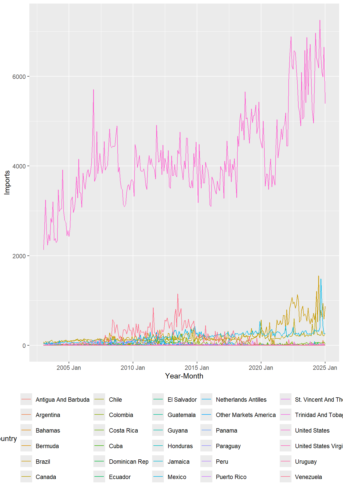
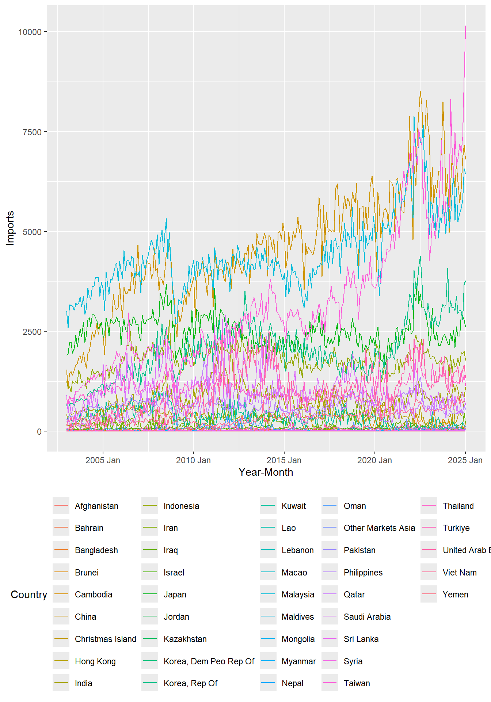
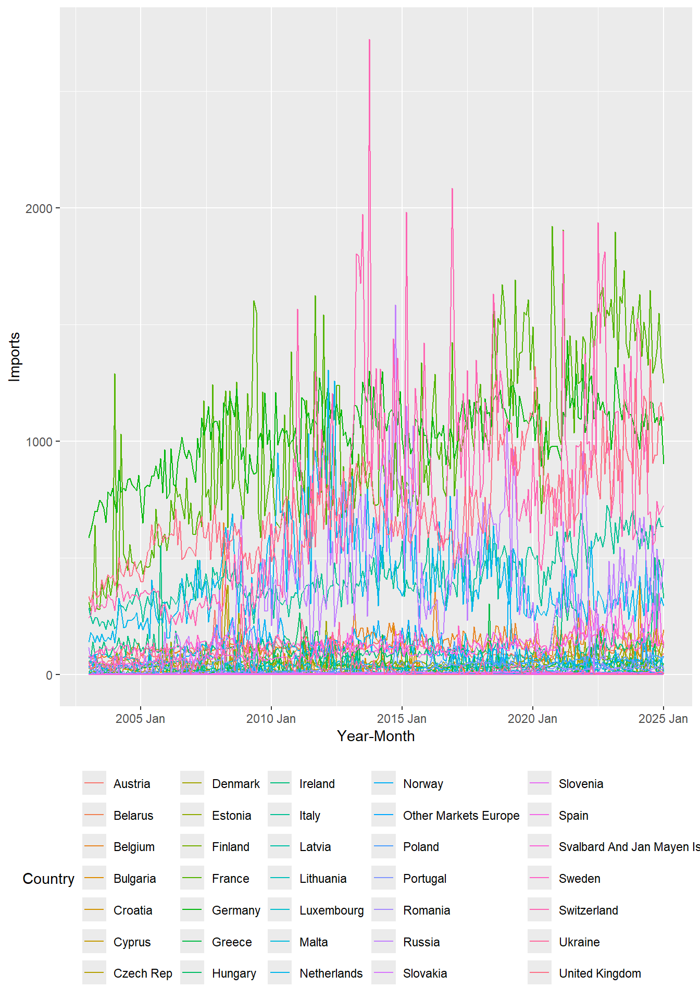
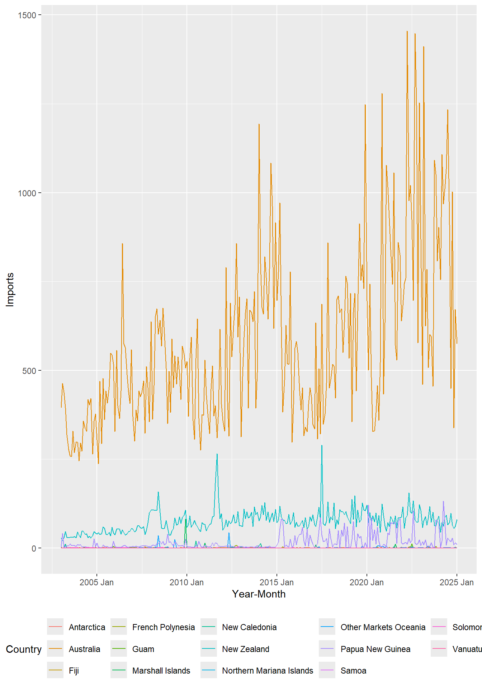
# Change the value for "Continent" accordingly: America, Asia, Europe, Oceania, Africa
ggplot(data = imports_countries_pivot %>% filter(Continent == "America"),
aes(x = `Year-Month`,
y = Imports,
color = Country))+
geom_line(size = 0.5) +
theme(legend.position = "bottom",
legend.box.spacing = unit(0.5, "cm"))
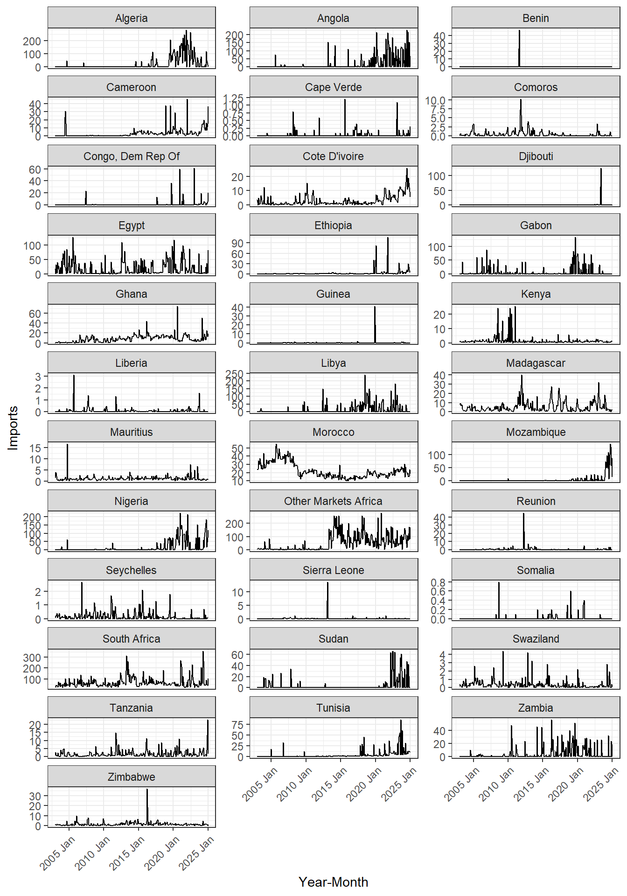
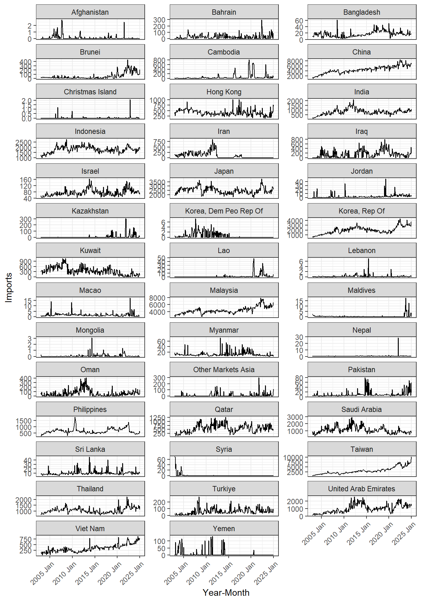
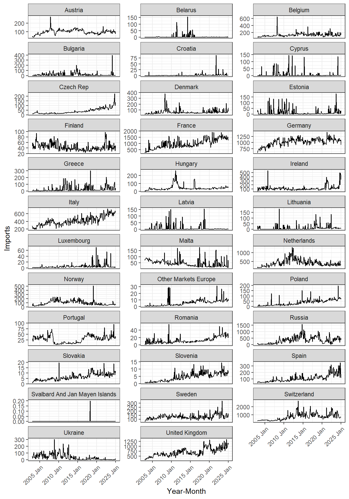
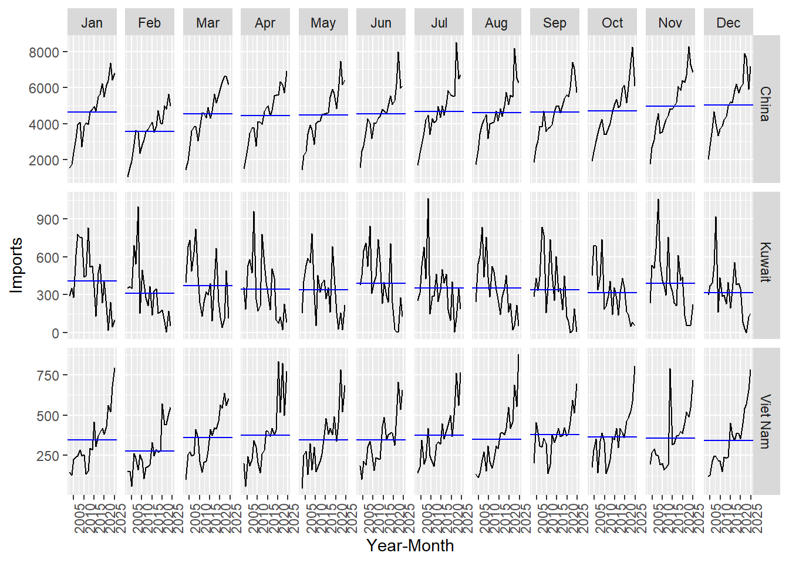
# Change the value for "Continent" accordingly: America, Asia, Europe, Oceania, Africa
ggplot(data = imports_countries_pivot %>% filter(Continent == "Asia"),
aes(x = `Year-Month`,
y = Imports))+
geom_line(size = 0.5) +
facet_wrap(~ Country,
ncol = 3,
scales = "free_y") +
theme_bw() +
theme(axis.text.x = element_text(angle = 45, hjust = 1))5.4 Visualise Seasonality with Cycle Plot
Let’s visualise the imports trend of a few countries with Cycle Plot. From Asia, China, Vietnam and Kuwait will be analysed. From Europe, Italy, Czech Republic and Slovania will be analysed. These countries are selected as there are visible trends in their graphs.
5.4.1 Asia
imports_countries_pivot %>%
filter(Country == "China" |
Country == "Viet Nam" |
Country == "Kuwait") %>%
autoplot(Imports) +
facet_grid(Country ~ ., scales = "free_y")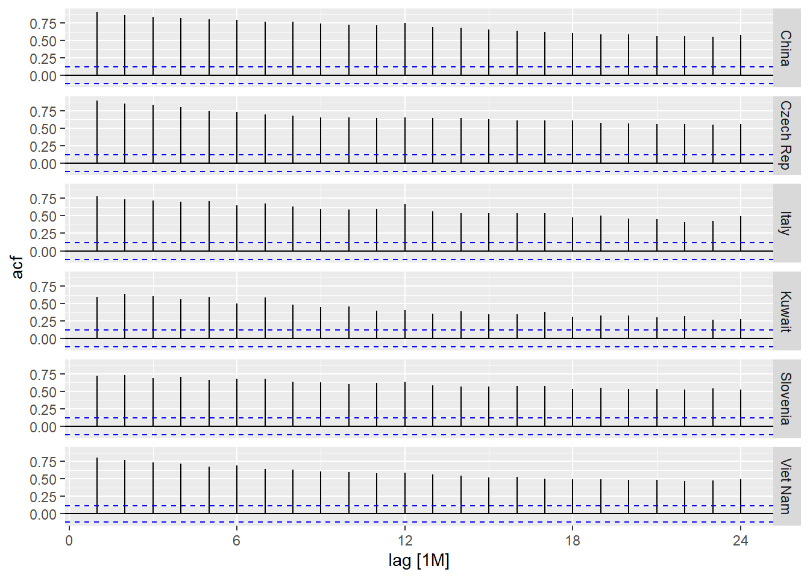
imports_countries_pivot %>%
filter(Country == "China" |
Country == "Viet Nam" |
Country == "Kuwait") %>%
gg_subseries(Imports)From the cycle plot above, China and Vietnam have visible increasing trend whereas Kuwait has a general decreasing trend in imports.
Kuwait show more erratic fluctuations, indicating potential irregular trade patterns with Singapore.
5.4.2 Europe
imports_countries_pivot %>%
filter(Country == "Italy" |
Country == "Czech Rep" |
Country == "Slovenia") %>%
autoplot(Imports) +
facet_grid(Country ~ ., scales = "free_y")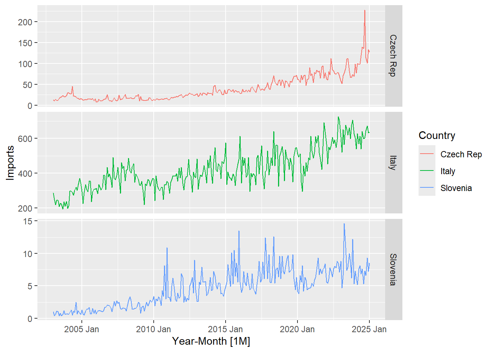
imports_countries_pivot %>%
filter(Country == "Italy" |
Country == "Czech Rep" |
Country == "Slovenia") %>%
gg_subseries(Imports)From the cycle plot above, we observe a general upward trend across all months for all 3 countries.
For Czech Rep, there is a huge increase in September 2025, but the imports for other months are steadily increasing.
Italy has higher import values than 2 other countries. Slovenia has larger fluctuations compared to other countries.
5.5 Time Series Decomposition
imports_countries_pivot %>%
filter(`Country` == "China"|
`Country` == "Viet Nam" |
`Country` == "Kuwait" |
`Country` == "Italy" |
`Country` == "Czech Rep" |
`Country` == "Slovenia") %>%
ACF(Imports) %>%
autoplot()An ACF (autocorrelation function) plot visually represents the correlation of a time series, helping us identify the seasonality and trend patterns.
From the ACF plot, there are signs of auto-correlation of the countries selected as the lags are statistically significant at 95% confidence interval.
The seasonal patterns seem to repeat every 12 months. Italy, Slovenia and Vietnam dies down faster in the second cycle.
imports_countries_pivot %>%
filter(`Country` == "China"|
`Country` == "Viet Nam" |
`Country` == "Kuwait" |
`Country` == "Italy" |
`Country` == "Czech Rep" |
`Country` == "Slovenia") %>%
PACF(Imports) %>%
autoplot()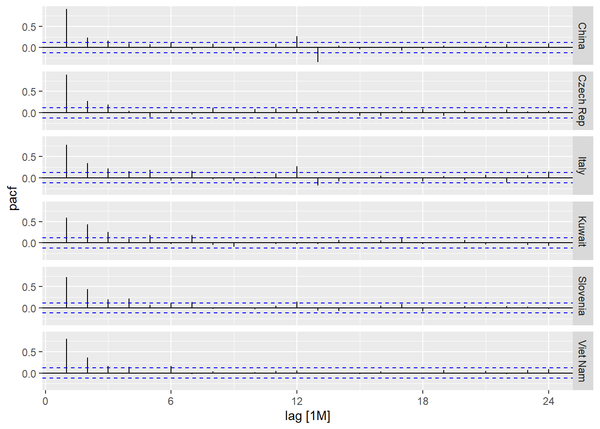
The PACF (partial auto-correlation function) plot shows the direct correlation between the time series and its lagged values.
From the PACF plot, all countries are significant at lag 2, where Vietnam, Kuwait, Slovenia are more significant than other countries.
China and Italy are also significant at lag 12, indicating a seasonality with 12-period cycle. Interestingly, at lag 13, the PACF of China imports is significant but towards the opposite direction. This might indicate a lagging seasonal effect where the change takes an extra period to reflect.
5.6 Time Series Forecasting
5.6.1 China - Data Sampling
We split the original dataset into holdout and training datasets.
china_holdout <- imports_countries_pivot %>%
filter(Country == "China") %>%
mutate(Type = if_else(
`Year-Month` >= yearmonth("2024 Jan"),
"Hold-out", "Training"))china_train <- china_holdout %>%
filter(`Year-Month` < yearmonth("2024 Jan"))5.6.2 China - EDA on Time Series Data
china_train %>%
model(stl = STL(Imports)) %>%
components() %>%
autoplot()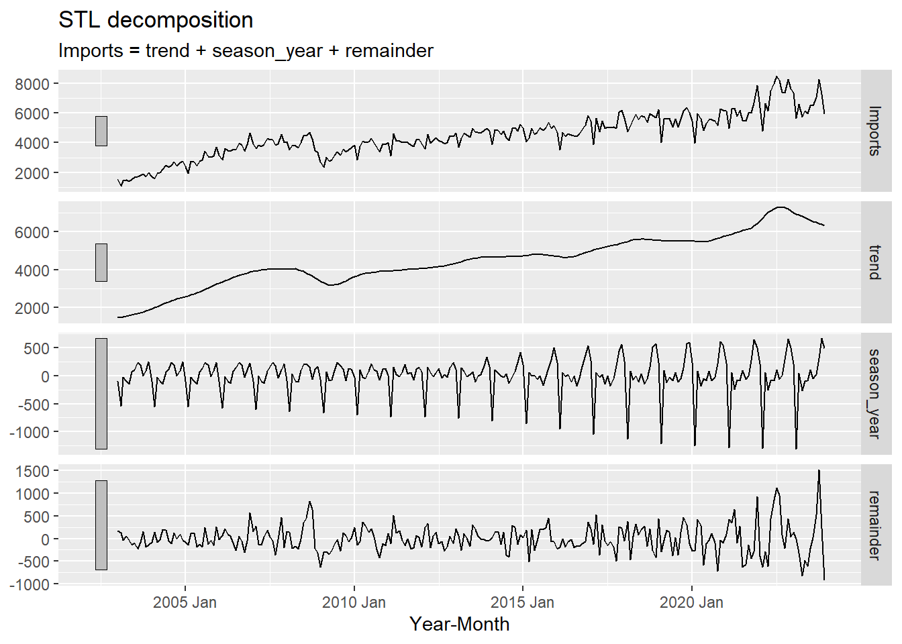
5.6.3 China - Fitting Forecasting Models
The code chunk below fits multiple ETS models, and we visualise the results using report().
fit_ETS_cn <- china_train %>%
model(`SES` = ETS(Imports ~ error("A") +
trend("N") +
season("N")),
`Holt`= ETS(Imports ~ error("A") +
trend("A") +
season("N")),
`damped Holt` =
ETS(Imports ~ error("A") +
trend("Ad") +
season("N")),
`WH_A` = ETS(
Imports ~ error("A") +
trend("A") +
season("A")),
`WH_M` = ETS(Imports ~ error("M")
+ trend("A")
+ season("M"))
)fit_ETS_cn %>%
report()# A tibble: 5 × 10
Country .model sigma2 log_lik AIC AICc BIC MSE AMSE MAE
<chr> <chr> <dbl> <dbl> <dbl> <dbl> <dbl> <dbl> <dbl> <dbl>
1 China SES 2.79e+5 -2275. 4557. 4557. 4567. 2.76e5 3.29e5 3.72e+2
2 China Holt 2.78e+5 -2274. 4558. 4558. 4576. 2.73e5 3.20e5 3.65e+2
3 China damped Holt 2.79e+5 -2274. 4560. 4560. 4581. 2.73e5 3.20e5 3.64e+2
4 China WH_A 1.74e+5 -2209. 4452. 4455. 4512. 1.63e5 2.15e5 2.99e+2
5 China WH_M 6.97e-3 -2169. 4371. 4374. 4431. 1.62e5 2.04e5 6.18e-25.6.4 China - Forecasting Future Values
We forecast the values for last 12 months using forecast().
fit_ETS_cn %>%
forecast(h = "12 months") %>%
autoplot(china_holdout,
level = NULL)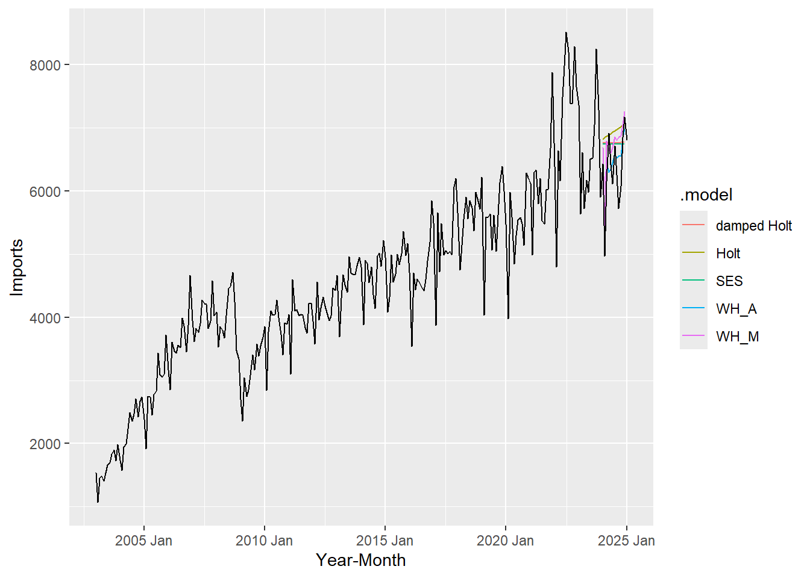
From the graph above, it seems like the Hold-Winters multiplicative (WH_M) method predicts the China imports better than other models. Moreover, the AIC value for this model is the lowest among all the fitted models, indicating that this model is more suited in forecasting China imports.
5.6.5 Italy - Data Sampling
We split the original dataset into holdout and training datasets.
italy_holdout <- imports_countries_pivot %>%
filter(Country == "Italy") %>%
mutate(Type = if_else(
`Year-Month` >= yearmonth("2024 Jan"),
"Hold-out", "Training"))italy_train <- italy_holdout %>%
filter(`Year-Month` < yearmonth("2024 Jan"))5.6.6 Italy - EDA on Time Series Data
italy_train %>%
model(stl = STL(Imports)) %>%
components() %>%
autoplot()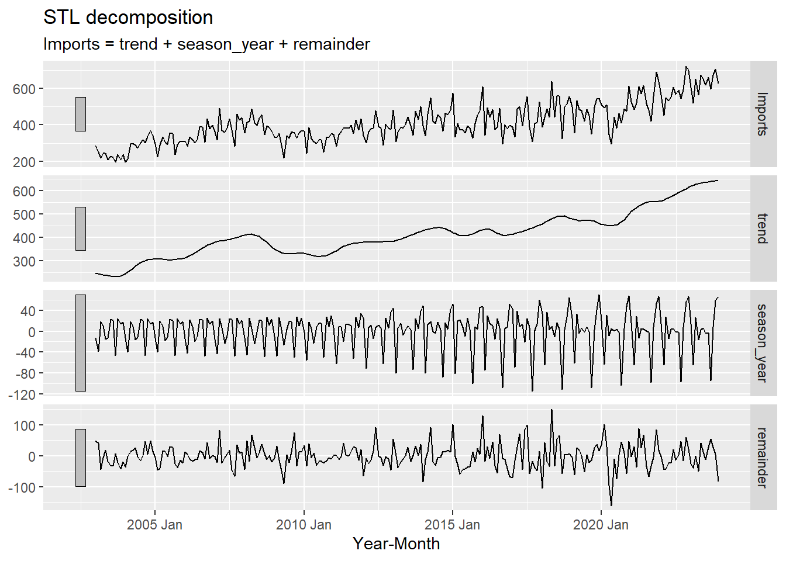
5.6.7 Italy - Fitting Forecasting Models
The code chunk below fits ETS automatically, and we visualise the results using report().
fit_autoETS <- italy_train %>%
model(ETS(Imports))
fit_autoETS %>% report()Series: Imports
Model: ETS(M,N,M)
Smoothing parameters:
alpha = 0.4058217
gamma = 0.0001451475
Initial states:
l[0] s[0] s[-1] s[-2] s[-3] s[-4] s[-5] s[-6]
288.3661 1.083839 1.041383 1.032201 0.8347086 1.025302 1.02229 0.9970577
s[-7] s[-8] s[-9] s[-10] s[-11]
1.0025 1.021449 1.054426 0.8573396 1.027504
sigma^2: 0.0165
AIC AICc BIC
3389.129 3391.163 3442.071 5.6.8 Italy - Forecasting Future Values
We forecast the values for last 12 months using forecast().
fit_autoETS %>%
forecast(h = "12 months") %>%
autoplot(italy_train)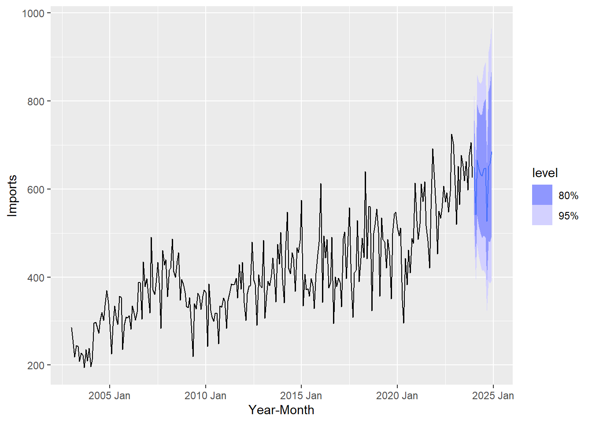
fc_autoETS <- fit_autoETS %>%
forecast(h = "12 months")
china_holdout %>%
ggplot(aes(x= `Year-Month`,
y= Imports)) +
autolayer(fc_autoETS,
alpha = 0.6) +
geom_line(aes(
color = Type),
alpha = 0.8) +
geom_line(aes(
y = .mean,
colour = "Forecast"),
data = fc_autoETS) +
geom_line(aes(
y = .fitted,
colour = "Fitted"),
data = augment(fit_autoETS))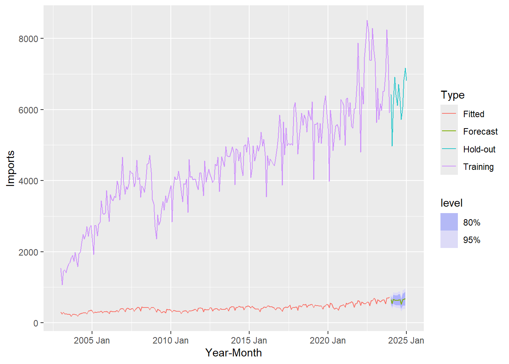
3. Comments on Existing Data Visualisation
3.1 Non-oil Merchandise Trade by Major Commodity Sections, 2024
The use of commodity icons in the chart above is clear and easy to understand. The chart also maintains a consistent and clear colours scheme that effectively distinguishes between the exports and imports. The chart also displays the percentages of exports and imports as a proportion of the total exports and imports respectively.
However, there are a few areas for improvement. The chart is not sorted in any particular order, which makes it difficult to visually compare the data. In the Machinery & Transport Equipment category, the first half of the bar is striped, and is only unique to this category. It is unclear whether this has a specific meaning, which could confuse readers.
3.1.1 Potential Make-Over
Bar chart is a good illustration for this purpose. A potential improvement includes adding faint gridlines to enhance readability and make it easier to compare exports and imports across different commodity sections.
The bar chart will also be sorted by exports amount for better clarity. Clear indications of the top 3 exports and imports commodity sections will also be included.
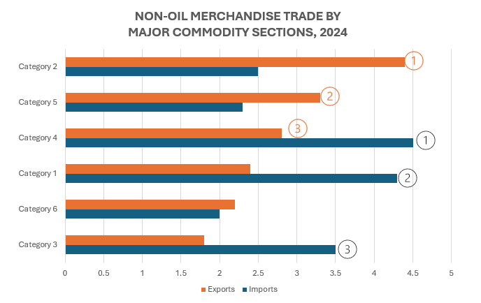
3.2 Non-oil Domestic Exports by Major Commodity Sections, 2024
The visualisation above creatively incorporates icons and an animated bar chart design, making it visually appealing to readers. The use of icons enhanced readability, allowing readers to grasp the information at one glance. In addition to the icons, the chart includes legible labels displaying the import amounts, category names and percentages, ensuring clarity and ease of understanding.
However, the colour scheme used could be enhanced. Certain colours, such as dark pink, are difficult to distinguish from the red background. The bar chart is also not sorted by imports amounts, making it challenging for readers to immediately identify the top exports. While there may be a reason for this arrangement, it is not indicated anywhere in the visualisation. The top 3 commodity sections are highlighted in a separate chart below, but due to the sequence in the main bar chart, they are not easily identifiable at a glance.
Furthermore, the rectangular design at the end of the ship graphic blends into the main bar chart, which could cause visual confusion for some readers.
3.2.1 Potential Make-Over
A donut chart could be an effective illustration as it visually represents the percentage breakdown of each sector. We can also easily identify the top categories at a glance.
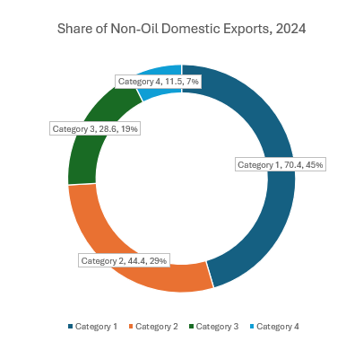
3.3 Major Trading Partners for Trade in Services, 2023
This chart is visually engaging, with appropriate use of flags and icons that make it easy to distinguish between countries, trade directions (exports vs imports). The comparison between 2019 and 2023 clearly shows the changes in trade performance between these 2 years. Additionally, the medal icons beside the top 3 countries effectively highlight top trading partners, providing an intuitive ranking.
However, the chart lacks context on why these specific years are chosen. This is likely to compare trade before and after Covid 19, with 2023 representing a post-recovery period and when trade has stabilised again. Additionally, the chart does not display the percentage change or growth indicators, making it harder to access trade trends at a glance.
3.3.1 Potential Make-Over
An animated bubble plot could be used to visualise changes in exports and imports by region over time. A toggle below the chart would allow readers to switch between years from 2019 to 2023, helping them to observe trends and shifts. The bubble size would represent the total export and imports volume of each region, while the x-axis would indicate import amounts and the y-axis would represent export amounts.
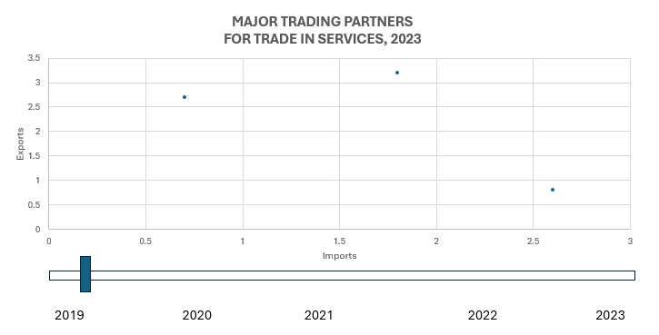